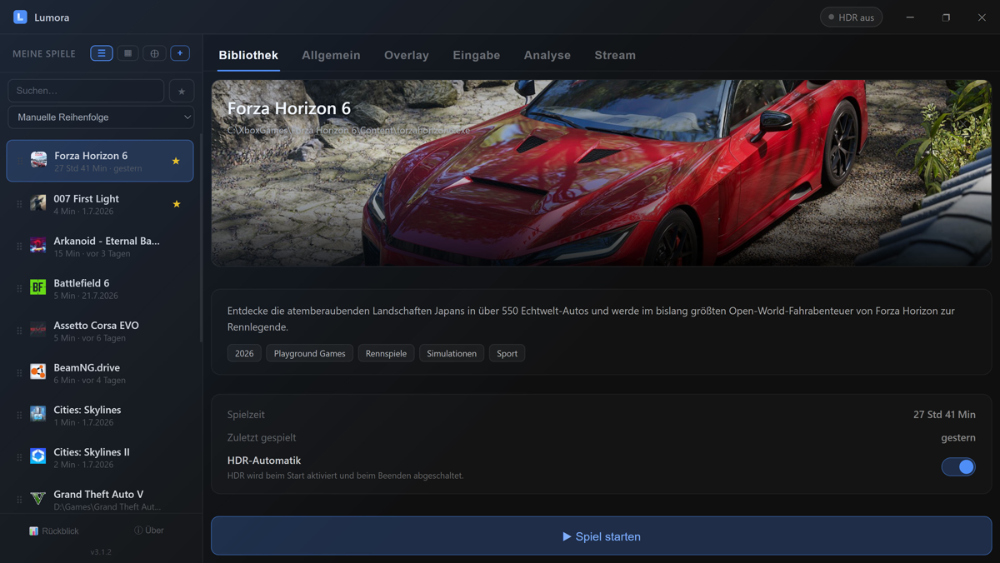

Lumora unifies your games from Steam, Epic, GOG, Ubisoft, Xbox / Game Pass, EA, Battle.net, Rockstar, Amazon and Riot in one beautiful cover library – at your desk with a mouse or on the couch entirely with a gamepad. And when friends want to watch: stream your game in up to 4K at 60 fps straight to their browser. No account, no subscription, no quality paywall.
⬇ Download free · 171 MBFor Windows 10 & 11 · no registration · open-source based · auto-updates

All stores, one gorgeous cover wall – with search, sorting, favorites, playtime tracking and a yearly recap. Covers and descriptions load automatically.
Share your game via link or a 6-letter room code. Viewers only need a browser – phone, tablet or PC. Direct peer-to-peer connection, hardware encoder, adaptive bitrate for weak connections. Learn more →
FPS, frametime graph, GPU and CPU temperature, load and power draw as an in-game overlay – no extra tools, live-editable in-game, 6 designs. Learn more →
The entire launcher works with an Xbox controller – navigation, settings, everything. Perfect for the gaming PC in the living room. Learn more →
HDR switches on per game at launch and back off afterwards – configurable for each game individually.
Freely bindable keyboard or gamepad combos: bring Lumora to the front, toggle the OSD, start/stop streaming your current game – without leaving the game.
Curious how it compares to the streaming you get in typical chat apps? Read the fair, fact-based comparison →
Lumora is free, has no ads, no premium tier and no artificial quality limits. It is built on trusted open-source foundations (FFmpeg, mediamtx, PresentMon, PawnIO) – all licenses are listed in the app.
Note: The in-app language can be switched between English and German in the settings. Website legal pages (imprint, privacy) are provided in German as required by German law.